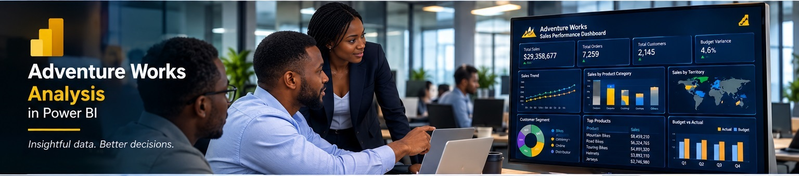
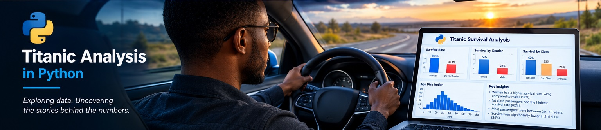

Home
Welcome to my portfolio. I am Agbo Ode Joseph, a Data Analyst, Service Center Representative and Customer Relationship Manager, skilled in Excel, Power BI and Python.
This portfolio showcases selected data analysis projects demonstrating my ability to work with data, uncover insights, create meaningful visualizations and support better business decision-making.
Frajo Enterprise Limited Analysis in Microsoft Excel
July, 2026
This project presents a sales analysis for Frajo Enterprise Limited using Microsoft Excel. The analysis focuses on organizing, examining and visualizing sales data to identify important business trends, performance patterns and insights that can support informed business decision-making.
Adventure Works Analysis in Microsoft Power BI
July, 2026

This project analyzes Adventure Works business data using Microsoft Power BI. It demonstrates data transformation, data modeling and interactive visualization to provide useful insights into sales performance and business activities.
Titanic Analysis in Python
July, 2026

This project explores the Titanic dataset using Python. The analysis covers data cleaning, exploratory data analysis and visualization to identify patterns within the dataset and understand factors associated with passenger survival.
Contact
Address:
Benue, Nigeria
Phone:
+2349167802962
Email:
aodejoseph60@gmail.com